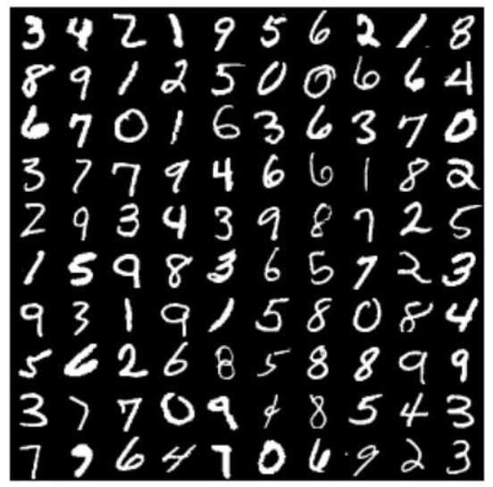
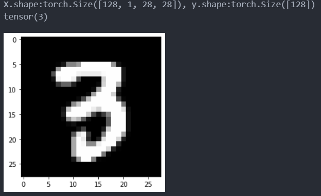
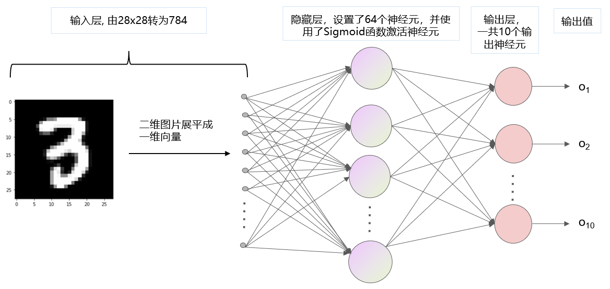
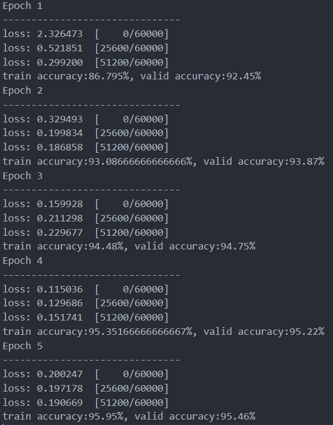

手写数字数据集MNIST介绍
手写数字数据集MNIST是一个常见的数字图片数据集，其包含了大量手写数字的灰度图像，每张图像的大小都是28x28像素。MNIST数据集有60000张图像用于训练和10000张图像用于测试，其中每张图像都被标记了对应的数字（0-9）。这个数据集非常简单，常常作为初学者的第一个 “Hello World” 项目。 
上手操作
为了方便初学者更好的学习，本项目采用编辑器VSCode和Python语言编写。
导入基本库，并加载MNIST数据集
import torch
import time
import torchvision
from torch.utils import data
from torch.autograd import Variable
from torchvision.datasets import mnist
import matplotlib.pyplot as plt
from torch import nn
import numpy as np
import itertools
'''固定随机种子，使得程序结果尽可能保证复现效果'''
seed = 1
torch.manual_seed(seed)
'''MINIST数据集预处理'''
data_tf = torchvision.transforms.Compose(
[
#将原始数据转为tensor
torchvision.transforms.ToTensor(),
# z-score 归一化，把MNIST中图片的像素分布拉回到 标准正态分布 N ~ (0, 1)
torchvision.transforms.Normalize([0.1307],[0.3081]),
]
)
'''下载数据集'''
data_path = 'F:\\zhendianyuanzi_linux\\dataset\\images' # 自定义图片下载存放路径
train_data = mnist.MNIST(data_path, train=True, transform=data_tf, download = True)
test_data = mnist.MNIST(data_path, train=False,transform=data_tf, download = True)
然后我们查看一下train_loader中的第一个batch中存放了什么
'''创建dataloader'''
batch_size = 128 #这里我们定义一个batch中存放128张图片
train_loader = data.DataLoader(train_data,batch_size=batch_size,shuffle=True)
test_loader = data.DataLoader(test_data, batch_size=batch_size,shuffle=False)
'''查看train_loader'''
for batch, (X, y) in enumerate(train_loader):
#打印第一个batch中的shape
print('X.shape:{}, y.shape:{}'.format(X.shape, y.shape))
#显示第一batch中的第一张图片，和打印其对应的标签
plt.imshow(X[0, 0], cmap = 'gray')
print(y[0])
break
运行这一行程序后，结果如下图所示。X表示一个batch中的样本，其shape为（128, 1, 28, 28），表示一个batch中一共有128个张图片，每张图片的通道数为1，每张图片对应的像素点个数是28x28。因为图片是灰度图像，所以只有1个通道，如果图片是彩色的，那么图片就有3个通道（即RGB）。y表示一个batch中样本所对应的标签，其值范围为从0到9。并且我们还把该batch中的第一张图片打印了出来，该图片是数字3，其对应的标签也是3。在读者的电脑上运行的时候，所显示的图片可能不是数字3，而是其他的数字。这是因为在这一句话中train_loader = data.DataLoader(train_data,batch_size=batch_size,shuffle=True)，我们开启了shuffle，值为True，这会让batch中的样本随机打乱，不固定。对于训练集train_loader中的样本必须要随机打乱，这样才能让模型更好地学习，并收敛。 
接下来我们定义网络模型结构，网络模型初步选择多层感知机（MLP）。
'''定义网络结构'''
class MLP(nn.Module):
def __init__(self, hidden_dim, class_num):
super(MLP, self).__init__()
self.fc = nn.Sequential(
nn.Flatten(),
nn.Linear(28*28, hidden_dim),
nn.Sigmoid(),
nn.Linear(hidden_dim, class_num),
)
def forward(self, x):
out = self.fc(x)
return out
hidden_dim = 64 #隐藏层神经元个数
class_num = 10 #由数字0到9，所以一共是10个类别
device = 'cuda' #使用 GPU设备，如果要使用cpu，请更改为 'cpu'
model = MLP(hidden_dim, class_num).to(device) # 把模型从内存中搬运到GPU中运行
print(model)
该模型的结构如下图所示 
定义训练函数train，和验证函数valid
def train(model, dataloader, loss_fn, optimizer, device):
'''模型训练'''
model.train() #很重要，开启模型的训练模式，保证batchnorm和dropout的参数是进行训练计算的
loss_sum = 0; num_batches = 0
y_true = []; y_pred = [] # y_true 和 y_pred 分别是真实的标签和模型预测的标签
for batch, (X, y) in enumerate(dataloader):
'''把图片喂给模型'''
X = X.to(device)
y = y.to(device)
pred = model(X)
_loss = loss_fn(pred, y)
'''反向传播，更新模型参数'''
optimizer.zero_grad()
_loss.backward()
optimizer.step()
'''自定义变量参数更新'''
loss_sum += _loss.item()
num_batches += 1
y_true.append( y.cpu().numpy())
y_pred.append( pred.argmax(1).cpu().numpy())
'''每经过200个batch就打印一次损失 '''
if batch % 200 == 0:
loss, current = _loss.item(), batch * len(X)
print(f"loss: {loss:>7f} [{current:>5d}/{len(dataloader.dataset):>5d}]")
'''展平, 并将List变为Numpy数组'''
y_true = np.array(list(itertools.chain.from_iterable(y_true)))
y_pred = np.array(list(itertools.chain.from_iterable(y_pred)))
return loss_sum/num_batches, y_true, y_pred
def valid(model, dataloader, loss_fn, device):
'''模型验证 '''
model.eval() #很重要，固定模型中的batchnorm和dropout，不然在验证阶段模型的参数会变动。
loss_sum = 0; num_batches = 0
y_true = []; y_pred = []
with torch.no_grad(): # 验证阶段要禁止梯度的传播
for batch, (X, y) in enumerate(dataloader):
'''把图片喂给模型'''
X = X.to(device)
y = y.to(device)
pred = model(X)
_loss = loss_fn(pred, y)
'''自定义变量参数更新'''
loss_sum += _loss.item()
num_batches += 1
y_true.append( y.cpu().numpy())
y_pred.append( pred.argmax(1).cpu().numpy())
'''展平, 并将List变为Numpy数组'''
y_true = np.array(list(itertools.chain.from_iterable(y_true)))
y_pred = np.array(list(itertools.chain.from_iterable(y_pred)))
return loss_sum/num_batches, y_true, y_pred
定义超参数、损失函数和优化器。
lr = 1e-3 #初始学习率设置
max_epoch = 5 #训练迭代次数
loss_fn = nn.CrossEntropyLoss() #使用交叉熵损失
optimizer = torch.optim.Adam(model.parameters(), lr=lr) #使用Adam优化器优化模型参数
开始训练。为了更加直观的学习，我们把MNIST的测试集当做验证集来使用。注意在实际中，验证集和测试集是要分开使用的，在后面的章节中我会详细地介绍训练集、验证集、测试集三者之间的关系。
for t in range(max_epoch):
print(f"Epoch {t+1}\n-------------------------------")
train_loss, train_y, train_pred_y = train(model, train_loader, loss_fn, optimizer, device)
valid_loss, valid_y, valid_pred_y = valid(model, test_loader, loss_fn, device)
train_acc = sum(train_y == train_pred_y)/len(train_y)*100
valid_acc = sum(valid_y == valid_pred_y)/len(valid_y)*100
print("train accuracy:{}%, valid accuracy:{}%".format(train_acc, valid_acc))
训练的结果如下图所示，训练到第5个epoch后，发现验证集的准确率达到了95.46%，效果看起来还可以接受。如果想要获得更好的准确率，可以尝试使用不同的超参数组合，例如MLP模型隐藏神经元中的个数，学习率、最大训练迭代次数等。 